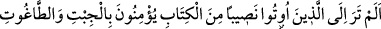
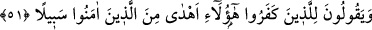

Gönül kandilini, ilim nûrundan yandırmış
Zahirini Allah için donatmış kesbî bir ilimle
Bâtını mâmurdur, mîras-ı Nebî olan vehbî ilimle
Her kime ki erişirse ilâhî inâyet eli
O kişi ilk günden tutar bir mürşid eteği
Benlik zindanına esir düşerek
Yıllarca bağlı kalan, kurtulamaz pek.
Ey kalbi selîm, iş zor ve yamandır.
Zannetme ki iş sâdece hayal ve zandır.
Şu halde sâlik, mürşidinin eteğine sımsıkı yapışıp onun sâyesinde ilm-i tevhîde vâkıf
olmaya, sonra da kendinden fânî olmaya teşebbüs etmelidir. Çünkü halin hakîkatiyle
tahkîka ermediği müddetçe sâdece irfan, saliki kurtaramaz. Bu sebeple Hz. Peygamber
(a.s) “İnsanların en şerlisi, kendisi diri olduğu halde kıyameti kopmuş kişidir.”[47]
buyurmaktadır. Yânî ilm-i tevhîde vâkıf olduğu halde nefsi fenâ ile ölmemiştir ki
Allah’la hayat bulsun. Böyle bir kişi bu haliyle herşeyin mübah olduğuna hükmeden bir
zındıktır. Allah Teâlâ bizi de, sizi de günahlardan ve çirkinliklerden korusun.
51- Kendilerine Kitap’tan nasip verilenleri görmedin mi? Putlara ve bâtıla îmân
ediyorlar, sonra da kâfirler için: «Bunlar, Allah’a îmân edenlerden daha doğru
yoldadır» diyorlar!
“Kendilerine Kitap’tan nasip verilenleri”, Tevrât’ın ilminden bir hisse verilen
yahûdîleri “görmedin mi?” Yâni, ey Muhammed! Onların durumuna bir bak da hayret
et.
Sanki “Ne yapıyorlar ki onlara bakılsın?” diye bir soru soruluyor da şöyle cevap
veriliyor: “cibta ve tâğûta îman ediyorlar.” Cibt, aslında bir put adı olup daha sonra
Allah’la birlikte başka tapılan bütün ilahlar için kullanılmıştır. Tâğût, şeytandır.
Kendisine tapılan ve tapılmayan bütün bâtıllar için kullanılır.
Rivâyet edilir ki yahûdî Huyey b. Ahtab ile Ka’b b. Eşref, yetmiş yahûdî süvâri ile
birlikte Hz. Peygamber ile savaşmak için Kureyşlilerle ittifak yapmak ve Hz.
Peygamber ile aralarındaki andlaşmayı bozmak üzere Mekke’ye doğru yola çıktılar.
Kureyşliler onlara: “Siz kitap ehlisiniz ve Muhammed’e bizden daha yakınsınız. Size
güvenemeyiz. İlahlarımıza secde edin ki size tam olarak inanalım.” dediler. Onlar da
bunu yaptılar. İşte cibt ve tâğûta inanmalarının mânâsı budur. Çünkü putlara secde ettiler
ve bu davranışlarıyla İblîs’e itâat etmiş oldular.